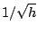
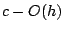
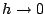

Next: About this document ...
On the convergence of additive Schwarz preconditioned GMRES
Xiuhong Du
Dept. of Mathematics College of Science and Technology
Temple University, Philadelphia PA 19122
dxhdxh@temple.edu
Daniel B. Szyld
Additive Schwarz preconditioners, when a coarse grid
correction is added, are said to be optimal for certain
discretized PDE problems, in the sense that bounds on the
convergence of iterative methods are independent on the mesh
size. Cai and Zou [1]
showed with an
example that in the absence of a coarse grid correction the
usual GMRES bound has a factor of the order of .
In this paper we consider the same one-dimensional example
(as well as a two-dimensional counterpart) and show that the
behavior of the method is not well represented by the above
mentioned bound. We use a different bound for GMRES from
Simoncini and Szyld [2]
and show that the relevant factor is
bounded by , so that as
, it
approximates a constant. Furthermore, for a sequence of
meshes the convergence curves are almost identical and the
number of GMRES iterations needed for convergence has a very
slow growth.
[1] Numer. Linear Algebra Appl. 9 (2002) 379-397.
[2] SIAM Rev. 47 (2005) 247-272.
Next: About this document ...
Bruce Fast
2006-03-11